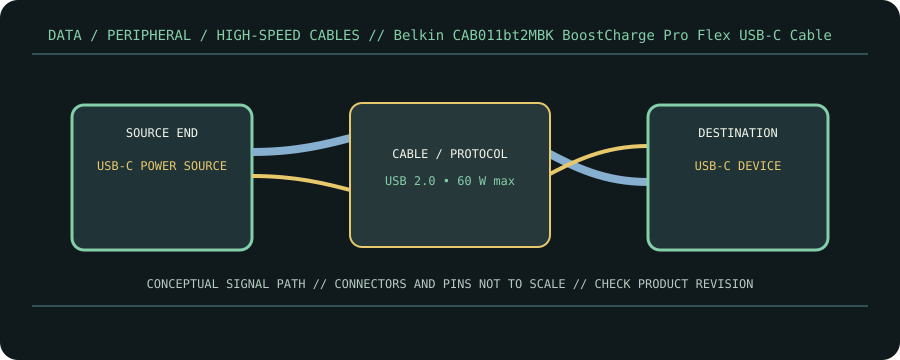

[ CABLE PRODUCT RECORD // BELKIN BOOSTCHARGE PRO FLEX USB-C TO USB-C CABLE 60 W, CAB011BT2MBK ]
Belkin CAB011bt2MBK BoostCharge Pro Flex USB-C Cable
USB-C male ↔ USB-C male, 2 m charge/data cable. This entry documents the named product model, not a universal guarantee for all cables with the same connector.

CLASSIFICATION: Data, peripheral, and high-speed cables. Model-specific facts below are sourced; negotiated operation remains limited by the connected devices.
Interface and capability
| Product / protocol | Belkin BoostCharge Pro Flex USB-C to USB-C Cable 60 W, CAB011bt2MBK. USB 2.0 High-Speed data (480 Mb/s) and USB Power Delivery up to 60 W. |
|---|---|
| Connector type | USB-C male at both ends; black 2 m BoostCharge Pro Flex SKU CAB011bt2MBK. |
| Electrical / length limits | 2 m; up to 480 Mb/s data and up to 60 W charging according to Belkin model listing. USB 2.0 data ceiling is distinct from its power ceiling. |
| Revision-specific compatibility | Suitable for USB-C charging and USB 2.0 data sync on compatible host/device pairs. It is not a Thunderbolt/USB4 cable and should not be used for video output unless a device-specific alternate mode is explicitly supported by the exact product specification. |
Compatibility & handling
- The 60 W ceiling requires a matching USB-PD charger and sink; the cable alone does not provide or negotiate power.
- Data is USB 2.0 class (up to 480 Mb/s), despite USB-C connectors; do not select it for high-speed external storage.
- Identify the full SKU CAB011bt2MBK and 2 m model: similarly named Belkin variants may have different power, length, or data capability.
Sources & further reading
- Belkin — BoostCharge Pro Flex USB-C Cable 60 W, 2 m, CAB011bt2MBKManufacturer SKU page for cable length, charging and data capability.
- Belkin Support — BoostCharge Pro Flex cable FAQManufacturer support and product-family compatibility information.
- USB-IF — USB 2.0 SpecificationUSB 2.0 data protocol and signaling reference.